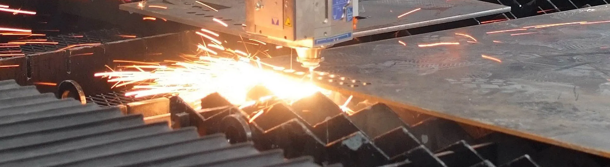

<div class="project">
  <div class="brg">
    <h1 class="font_2 titel">Projects</h1>
    <div class="ptxt">
      <p
        class="font_7"
        style="text-align: center; line-height: 1.5em; font-size: 17px"
      >
        Below mentioned initiatives streamlined processes, increased
        productivity, and resulted in significant cost savings. Additionally, I
        implemented best practices in project management, which improved team
        collaboration, reduced project risks, and ensured timely project
        delivery.
      </p>
    </div>
    <article class="card_2 animate__animated animate__fadeInUp">
      <div class="temporary_text">
        
      </div>
      <div class="card_content">
        <span class="card_title font_6">Subcontracting PO Tracking System</span>
        <span class="card_subtitle font_7">Business Analyst</span>
        <p class="card_description font_7">
          The system aims to manage the subcontracting component manufacturing
          and inspection status of sub- assemblies for Steam Generators,
          resulting in a 70% reduction in manual tracking of parts and
          components.
        </p>
      </div>
    </article>
    <article class="card_2 animate__animated animate__fadeInLeftBig">
      <div class="temporary_text">
        
      </div>
      <div class="card_content">
        <span class="card_title font_6">Advanced Plate-Cutting Request</span>
        <span class="card_subtitle font_7">Business Analyst</span>
        <p class="card_description font_7">
          The Plate-cutting Request system enables the generation of cutting
          requests before the material becomes available. This solution ensures
          that materials are cut accurately and reduces waiting time for the
          finished product.
        </p>
      </div>
    </article>
    <article class="card_2 animate__animated animate__fadeInLeftBig">
      <div class="temporary_text">
        
      </div>
      <div class="card_content">
        <span class="card_title font_6"
          >AutoCAD BOT for BOM Data Extraction</span
        >
        <span class="card_subtitle font_7">Business Analyst</span>
        <p class="card_description font_7">
          The AutoCAD bot for Bill of Material extraction is an automated tool
          that generates BOMs from AutoCAD drawing files. This solution
          significantly reduces manual extraction efforts by 95%, freeing up
          valuable time and resources for other critical tasks.
        </p>
      </div>
    </article>
    <article class="card_2 animate__animated animate__fadeInLeftBig">
      <div class="temporary_text">
        
      </div>
      <div class="card_content">
        <span class="card_title font_6">Job Time Booking System</span>
        <span class="card_subtitle font_7">Business Analyst</span>
        <p class="card_description font_7">
          The time booking system is designed to accurately record worker hours
          on specific jobs in a factory, which is essential for cost analysis,
          labor cost allocation, and minimizing idle time. This system provides
          real-time data to help managers make informed decisions and optimize
          operations.
        </p>
      </div>
    </article>
  </div>
</div>
